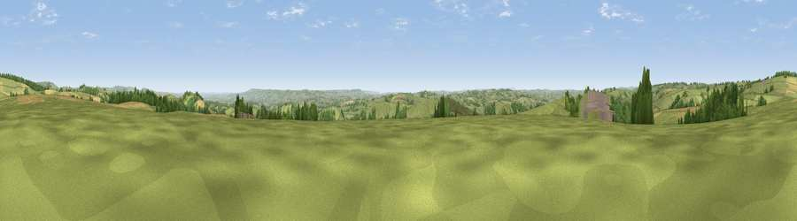

Viewpoint near Clayhanger
#8868 in England · top 19% of its area beats it · near Clayhanger · path 243 mWhere it is
The exact computed spot (ST 03812 25525). Click the marker for map links.
Public access: the nearest public right of way is about 243 m away — the final stretch may cross private land. Computed from Natural England's CRoW access layer and OpenStreetMap rights of way — not the legal definitive map. Always verify locally.
The view, rendered

A 360° render of this exact spot computed from the terrain model, tree cover and land cover — summer colours, afternoon light, calibrated against photographs of famous viewpoints. Real trees, hedges and buildings will differ in detail.
The panorama
Grey silhouette: terrain skyline in each direction (720 bearings, Earth curvature and refraction included). Dashed green: skyline with trees (+15 m) and buildings (+8 m) as obstacles. Blue strip: how far the ground is visible on each bearing.
Where the view opens
Wedge length = distance to the farthest visible ground on that bearing (vegetation-aware). Rings at 10, 25 and 50 km.
What fills the view
69% grassland · 16% cropland · 15% woodland
Angular shares of the visible panorama (visual magnitude), not map area. Landscape diversity 0.37 (0–1 Shannon).
Key numbers
More beautiful places nearby
The staircase of upgrades: each row has a higher view potential than everything closer. Driving times are estimates from straight-line distance, calibrated against real road routing — check an actual route before setting out.
| Place | Direction | Drive | Score |
|---|---|---|---|
| Combe Downs | SSW · 2 km | ~5 min | 65.1 |
| Viewpoint near Wiveliscombe | E · 3 km | ~7 min | 75.1 |
| Viewpoint near Elworthy | NNE · 9 km | ~18 min | 75.6 |
| Viewpoint near Elworthy | NNE · 10 km | ~20 min | 79.2 |
| Viewpoint near Roadwater | NNW · 11 km | ~21 min | 82.9 |
| Viewpoint near Roadwater | N · 12 km | ~22 min | 83.6 |
| Viewpoint near Roadwater | N · 12 km | ~23 min | 84.2 |
| Viewpoint near Roadwater | NNW · 13 km | ~24 min | 85.2 |
51.02102, -3.37277 · source: screening · position refined by local search. Computed location — check access rights before visiting.